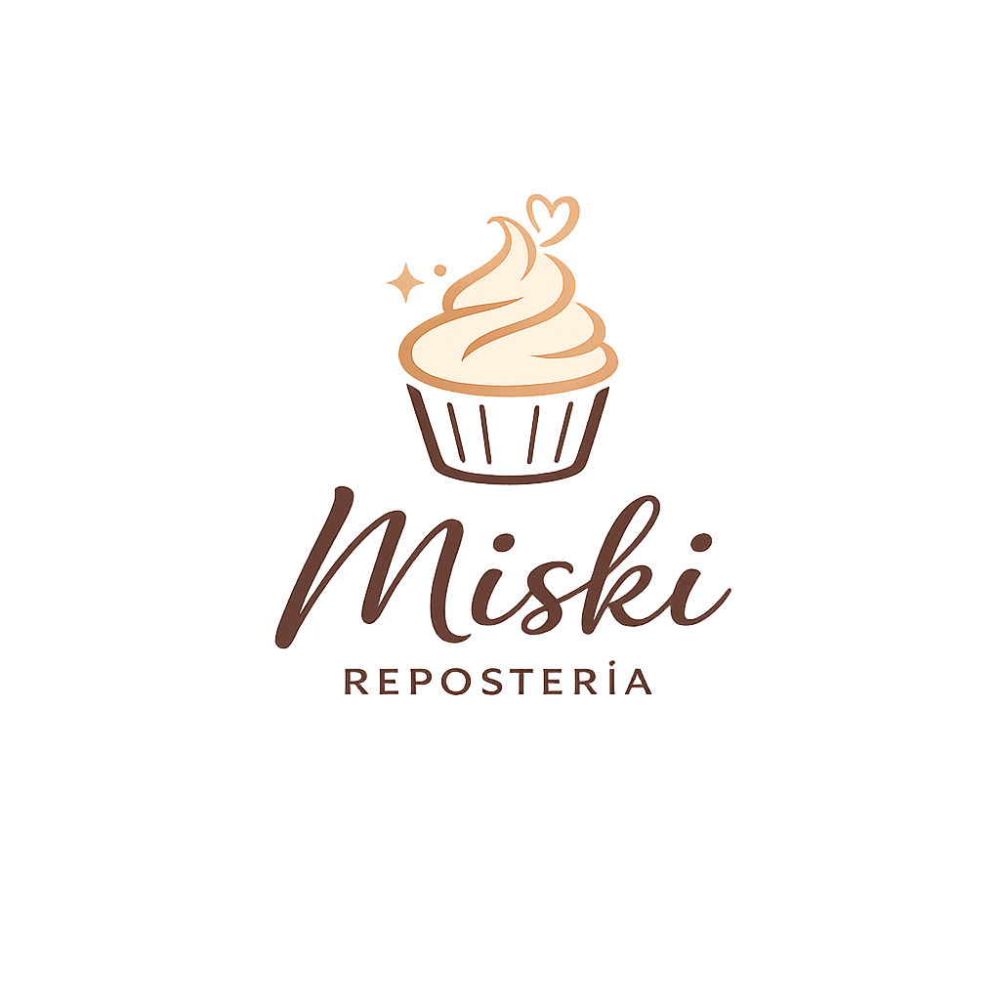
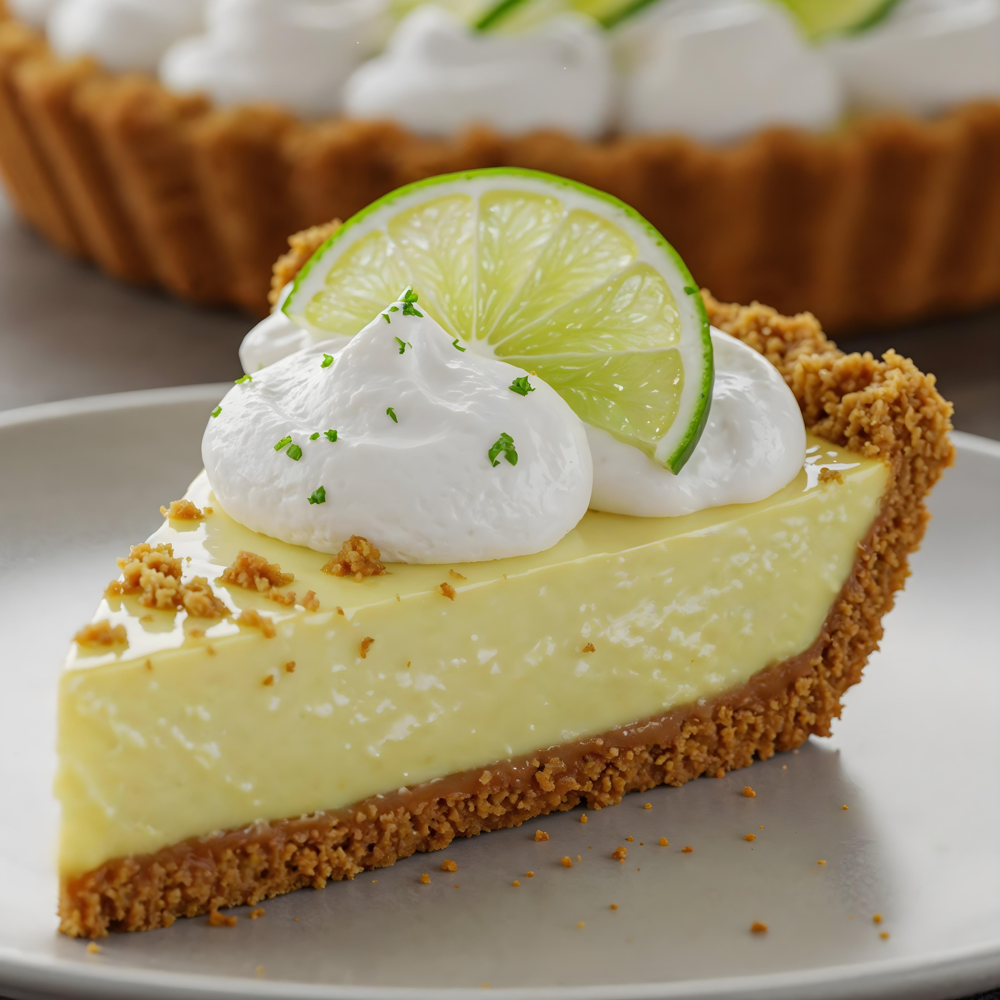
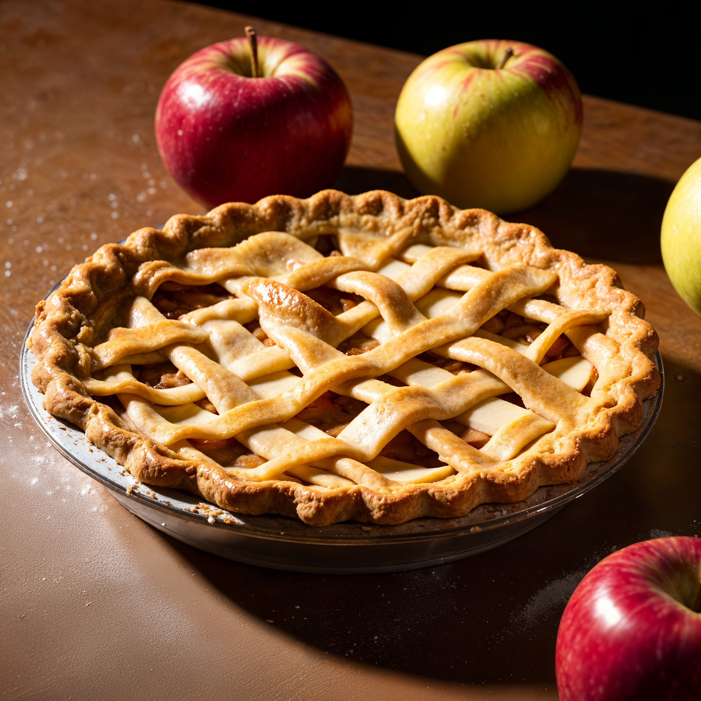
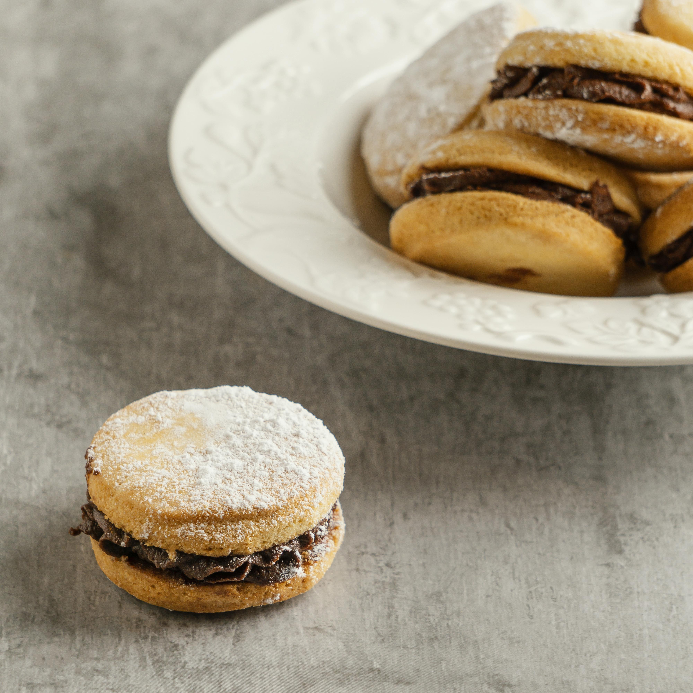

Frescura cítrica, base crujiente y merengue suave: el equilibrio perfecto entre dulzura y acidez.

Masa dorada y crujiente con manzanas frescas y especias aromáticas: un postre cálido y reconfortante.

Suaves galletas rellenas de cremoso dulce de leche, cubiertas con un toque de azúcar: un clásico irresistible.

“El pie de limón es insuperable, fresco y delicioso.”
“Siempre encuentro calidad y cariño en cada detalle.”
“Miski convierte cualquier ocasión en un momento especial.”